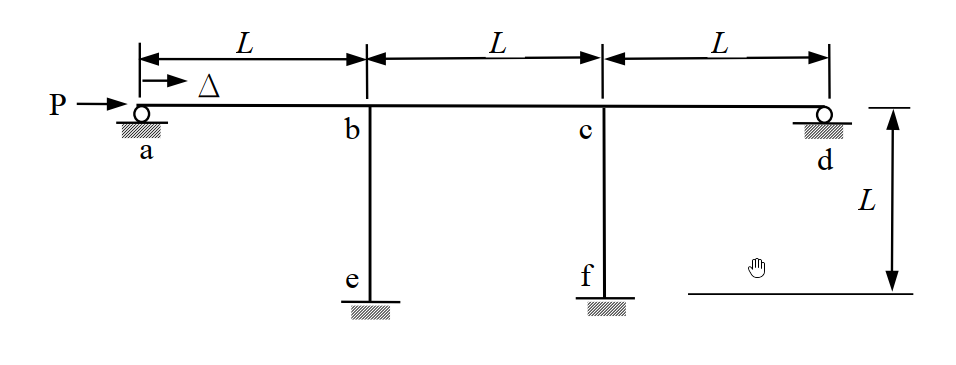

考題編號：SA-2009-3
主分類： SA-U1-1 剛架結構分析
副分類： SA-U1-4 傾角變位法 (Slope-Deflection Method)
分析法： 傾角變位法
標籤： 側移剛架, 水平勁度, 對稱性
1. 原始題目重述 (Problem Restatement)
本題為一 $\pi$ 型剛架結構，頂部為連續梁 a-b-c-d，下方以兩根固定基座的柱子 be、cf 支撐。在節點 a 受到一水平向右外力 $P$ 作用，使剛架產生水平位移 $\Delta$。
- 幾何條件： 各桿件（ab, bc, cd, be, cf）之長度皆為 $L$。
- 支撐條件： 節點 a、d 兩處為水平滾支承（提供垂直反力，但不提供彎矩及水平阻力）。節點 e、f 為固定端支承。
- 材料與斷面性質： 各桿件之抗彎剛度 $EI$ 均相同，且不計桿件之軸向變形。
本題要求：
- 計算此剛架結構之總體水平勁度 $K_H$。
- 若給定 $P = 100\text{ kN}$，$L = 10\text{ m}$，請計算並標示各節點（各桿端）之彎矩。

2. 考題核心精神與出題者意圖 (Core Concepts & Examiner's Intent)
本題的核心觀念在於具側移剛架的傾角變位法分析，以及對結構變形對稱性的敏銳度。
出題者意圖測驗考生以下幾項能力：
- 側移角（$\psi$）之建立：能否正確判斷水平桿件因不計軸向變形而無相對側移（$\psi=0$），垂直柱則具有相同之側移角（$\psi = \Delta/L$）。
- 鉸端修正公式之運用：a、d 端為鉸接，需使用修正後之傾角變位公式，以減少未知數的數量。
- 層剪力平衡方程式（Storey Shear Equation）：能否透過柱頂與柱底彎矩，正確推導出柱子的樓層剪力，並與水平外力 $P$ 建立平衡關係。
- 利用變形模式簡化計算：因結構對稱且承受側向平移變形，兩節點 b、c 的旋轉角會有 $\theta_b = \theta_c$ 的關係，若能觀察出此特性可大幅減少解聯立方程式的時間。
3. 解題戰略地圖與陷阱分析 (Strategic Roadmap & Trap Analysis)
解題戰略：
- 設定自由度與變形參數：
- 未知節點旋轉角：$\theta_b$、$\theta_c$。
- 未知側移參數：側移量 $\Delta$ 對應柱之側移角 $\psi = \Delta / L$。
- 利用鉸端修改公式，消除 $\theta_a$、$\theta_d$ 的計算。
- 列立桿端彎矩方程式：依傾角變位法，將各桿端彎矩以 $\theta_b$、$\theta_c$ 及 $\Delta/L$ 表示。
- 建立節點平衡方程式：利用 $\sum M_b = 0$ 及 $\sum M_c = 0$，找出 $\theta_b$、$\theta_c$ 與側移 $\Delta/L$ 的數學關係。
- 建立整體樓層剪力平衡：利用 $\sum H = 0$ 讓外力 $P$ 等於兩柱子提供的抵抗剪力，將結果化簡後即可求得水平勁度 $K_H = P / \Delta$。
- 代入數值求算彎矩：第二小題帶入給定條件，反推 $K\Delta/L$ 與 $K\theta$ 的實質數值，最後代回步驟 2 的桿端彎矩方程式，即得各桿端彎矩。
陷阱分析：
- 陷阱一：滾支承的認知錯誤。a、d 兩點為「水平滾支承」，意味著它們可以在水平方向自由移動而不產生水平反力，因此抵抗水平推力 $P$ 的唯一來源是基座固定的兩根柱子 be、cf。若誤以為 a、d 會產生水平反力，將無法建立正確的層剪力方程。
- 陷阱二：符號法則混淆。傾角變位法強烈依賴符號約定，本題一律假設「順時針」旋轉與彎矩為正。由於結構整體向右側移，柱的弦位移角 $\psi = \Delta/L$ 亦為順時針（正值）。若代錯符號會導致端彎矩完全錯誤。
3.5 變數層次分析 (Variable Hierarchy Analysis)
最終目標
求出剛架的總體水平勁度 $K_H$ 以及在指定載重與跨度下的各桿端彎矩值
本題關鍵公式（依計算順序）
- 傾角變位基本式 (雙固端): $M_{ij} = \frac{2EI}{L}(2\theta_i + \theta_j - 3\psi) + MF_{ij}$
- 傾角變位修正式 (一端鉸接): $M_{ji} = \frac{3EI}{L}(\theta_j - \psi) + \left(MF_{ji} - \frac{MF_{ij}}{2}\right)$
- 節點力矩平衡: $\sum M_i = 0$ (藉此將 $\theta$ 用 $\psi$ 表示)
- 柱之剪力方程式: $V_{col} = -\frac{M_{top} + M_{bot}}{L}$
- 水平整體平衡: $P = \sum V_{col} \implies P = \boxed{f(\Delta)} \implies K_H = \frac{P}{\Delta}$
L1：題目直接給定
| 符號 | 數值 | 說明 |
|---|---|---|
| $P$ | $100 \text{ kN}$ | 節點 a 受到的水平推力 (第二小題) |
| $L$ | $10 \text{ m}$ | 所有桿件之統一長度 (第二小題) |
| $EI$ | (常數) | 所有桿件統一之抗彎剛度 |
L2：需知識點推導
傾角變位與節點平衡
| 符號 | 公式／來源 | 卡關? |
| --- | --- | --- |
| $K$ | $\frac{EI}{L}$ | |
| $\theta_b, \theta_c$ | 由 $\sum M_b = 0, \sum M_c = 0$ 求得，並利用對稱性知 $\theta_b = \theta_c$ | |
水平勁度推導
| 符號 | 公式／來源 | 卡關? |
| --- | --- | --- |
| $V_{be}, V_{cf}$ | 柱子頂部抵抗之剪力，$- \frac{M_{be}+M_{eb}}{L}$ 及 $- \frac{M_{cf}+M_{fc}}{L}$ | |
| $K_H$ | $K_H = \frac{P}{\Delta}$ | |
各端彎矩求解
| 符號 | 公式／來源 | 卡關? |
| --- | --- | --- |
| $K\frac{\Delta}{L}$ | 將 $P, L$ 數值代入樓層剪力平衡方程式反求 | |
| $K\theta$ | 代入 $\theta$ 與 $\Delta/L$ 之比例關係求得 | |
| $M_{ij}$ | 將已知之 $K\theta$ 與 $K\frac{\Delta}{L}$ 數值代回各桿端彎矩公式 | |
L3：深層知識（不懂就卡住）
| 知識點 | 說明 | 卡關? |
|---|---|---|
| 側移鉸端修正 | 當遠端為鉸支承時，近端彎矩可直接使用 $3K(\theta_{近} - \psi)$，可免除計算遠端旋轉角。 | |
| 結構變形對稱性 | 均勻 $\pi$ 型結構受純水平側推，兩柱受力變形模式一致，必有 $\theta_b = \theta_c$。 | |
| 樓層剪力方程式 | 在有側移剛架中，外力水平推力必須等於所有提供抗剪的垂直柱之總剪力 $\sum V_{col}$。 |
4. 步驟化詳細計算過程 (Step-by-Step Detailed Calculation)
4.1 第一小題：計算構架總體水平勁度 $K_H$
Step 1: 建立傾角變位方程式
假設節點順時針旋轉為正，桿件順時針彎矩為正。令 $K = \frac{EI}{L}$。
由於水平梁不計軸向變形，所有水平桿件的相對側移為零（弦位移角 $\psi = 0$）。
垂直柱 be、cf 隨構架整體向右移動 $\Delta$，其弦位移角為 $\psi = \frac{\Delta}{L}$。
因為底端 e、f 為固定端，$\theta_e = \theta_f = 0$。
各桿端彎矩如下：
-
桿件 ab (a為鉸端):
$$ M_{ba} = 3K \theta_b $$ -
桿件 bc:
$$ M_{bc} = 2K(2\theta_b + \theta_c) $$
$$ M_{cb} = 2K(2\theta_c + \theta_b) $$ -
桿件 cd (d為鉸端):
$$ M_{cd} = 3K \theta_c $$ -
桿件 be (e為固定端):
$$ M_{be} = 2K\left(2\theta_b + \theta_e - 3\frac{\Delta}{L}\right) = 2K\left(2\theta_b - 3\frac{\Delta}{L}\right) = 4K\theta_b - 6K\frac{\Delta}{L} $$
$$ M_{eb} = 2K\left(\theta_b + 2\theta_e - 3\frac{\Delta}{L}\right) = 2K\left(\theta_b - 3\frac{\Delta}{L}\right) = 2K\theta_b - 6K\frac{\Delta}{L} $$ -
桿件 cf (f為固定端):
同理：
$$ M_{cf} = 4K\theta_c - 6K\frac{\Delta}{L} $$
$$ M_{fc} = 2K\theta_c - 6K\frac{\Delta}{L} $$
Step 2: 節點平衡方程式
對節點 b 取力矩平衡 ($\sum M_b = 0$)：
$$ M_{ba} + M_{bc} + M_{be} = 0 $$
$$ 3K\theta_b + 2K(2\theta_b + \theta_c) + 4K\theta_b - 6K\frac{\Delta}{L} = 0 $$
$$ (3 + 4 + 4)K\theta_b + 2K\theta_c - 6K\frac{\Delta}{L} = 0 $$
$$ 11\theta_b + 2\theta_c = 6\frac{\Delta}{L} \quad \cdots (1) $$
對節點 c 取力矩平衡 ($\sum M_c = 0$)：
$$ M_{cb} + M_{cd} + M_{cf} = 0 $$
$$ 2K(2\theta_c + \theta_b) + 3K\theta_c + 4K\theta_c - 6K\frac{\Delta}{L} = 0 $$
$$ 2\theta_b + 11\theta_c = 6\frac{\Delta}{L} \quad \cdots (2) $$
策略註解： 由方程式 (1) 與 (2) 係數完全對稱，可直接判定結構之變形具對稱特性。
解聯立方程得：
$$ \theta_b = \theta_c = \frac{6}{13}\frac{\Delta}{L} $$
Step 3: 樓層剪力平衡 (Storey Shear Equation)
將 $\theta_b$ 代回柱端彎矩方程式中：
$$ M_{be} = 4K\left(\frac{6}{13}\frac{\Delta}{L}\right) - 6K\frac{\Delta}{L} = \left(\frac{24}{13} - \frac{78}{13}\right)K\frac{\Delta}{L} = -\frac{54}{13}K\frac{\Delta}{L} $$
$$ M_{eb} = 2K\left(\frac{6}{13}\frac{\Delta}{L}\right) - 6K\frac{\Delta}{L} = \left(\frac{12}{13} - \frac{78}{13}\right)K\frac{\Delta}{L} = -\frac{66}{13}K\frac{\Delta}{L} $$
同理，因對稱性可得：$M_{cf} = -\frac{54}{13}K\frac{\Delta}{L}$， $M_{fc} = -\frac{66}{13}K\frac{\Delta}{L}$。
將頂部連梁 a-b-c-d 視為一自由體，水平方向力量包含外力 $P$ 以及兩根柱子於頂部提供之反力剪力。
其中單根柱之剪力與其兩端彎矩關係為：$V_{col} = -\frac{M_{top} + M_{bottom}}{L}$。
兩根柱子所提供的抵抗總剪力為：
$$ \sum H = -\frac{M_{be} + M_{eb}}{L} - \frac{M_{cf} + M_{fc}}{L} $$
$$ \sum H = -2 \times \frac{ -\frac{54}{13}K\frac{\Delta}{L} - \frac{66}{13}K\frac{\Delta}{L} }{L} = 2 \times \frac{120}{13}\frac{K\Delta}{L^2} = \frac{240}{13}\frac{K\Delta}{L^2} $$
依據整體水平力平衡：
$$ P = \sum H \implies P = \frac{240}{13}\frac{K}{L^2}\Delta = \frac{240}{13}\frac{EI}{L^3}\Delta $$
總體水平勁度 $K_H$ 定義為單位位移所需之力，故：
$$ \boxed{K_H = \frac{P}{\Delta} = \frac{240 EI}{13 L^3}} $$
4.2 第二小題：計算各節點彎矩
給定 $P = 100\text{ kN}$，$L = 10\text{ m}$。
首先求出變數組合 $K\frac{\Delta}{L}$ 與 $K\theta$ 的實質數值：
$$ P = \frac{240}{13L}\left(K\frac{\Delta}{L}\right) \implies K\frac{\Delta}{L} = \frac{13 P L}{240} $$
而旋轉角參數為：
$$ K\theta_b = K\theta_c = \frac{6}{13}\left(K\frac{\Delta}{L}\right) = \frac{6}{13} \times \frac{13 P L}{240} = \frac{P L}{40} $$
將 $P=100, L=10$ 代入得 $PL = 1000\text{ kN-m}$，故：
$$ K\theta = \frac{1000}{40} = 25\text{ kN-m} $$
$$ K\frac{\Delta}{L} = \frac{13 \times 1000}{240} = \frac{325}{6}\text{ kN-m} \approx 54.167\text{ kN-m} $$
將上述數值代入 Step 1 的端彎矩方程式：
-
梁 ab 桿:
$$ M_{ab} = 0 $$
$$ M_{ba} = 3K\theta_b = 3 \times 25 = \boxed{75\text{ kN-m (順時針)}} $$ -
梁 bc 桿:
$$ M_{bc} = 2K(2\theta_b + \theta_c) = 6K\theta_b = 6 \times 25 = \boxed{150\text{ kN-m (順時針)}} $$
$$ M_{cb} = 2K(2\theta_c + \theta_b) = 6K\theta_c = \boxed{150\text{ kN-m (順時針)}} $$ -
梁 cd 桿:
$$ M_{cd} = 3K\theta_c = 3 \times 25 = \boxed{75\text{ kN-m (順時針)}} $$
$$ M_{dc} = 0 $$ -
柱 be 桿:
$$ M_{be} = 4K\theta_b - 6K\frac{\Delta}{L} = 4(25) - 6\left(\frac{325}{6}\right) = 100 - 325 = \boxed{-225\text{ kN-m (逆時針)}} $$
$$ M_{eb} = 2K\theta_b - 6K\frac{\Delta}{L} = 2(25) - 325 = 50 - 325 = \boxed{-275\text{ kN-m (逆時針)}} $$ -
柱 cf 桿: (與 be 桿完全對稱)
$$ M_{cf} = \boxed{-225\text{ kN-m (逆時針)}} $$
$$ M_{fc} = \boxed{-275\text{ kN-m (逆時針)}} $$
(註：節點平衡檢查：$M_{ba} + M_{bc} + M_{be} = 75 + 150 - 225 = 0$，符合平衡條件，計算無誤。)
5. 關鍵爭議點與進階探討 (Critical Issues & Advanced Discussion)
-
支承反力的物理意義與靜定性探討：
題目中特別設計 a、d 為「滾支承」，這表示這兩點只能提供垂直反力而無法提供水平力。若此處設計為鉸支承 (Hinged Support) 則它們將分擔部分水平推力，整體的樓層剪力方程就必須把 a、d 的水平反力也納入計算，計算複雜度將大幅提升。 -
分析方法的選擇：
有側移的剛架亦可採用「彎矩分配法」解題，但流程需分為兩階段：第一階段假設剛架無側移，計算因外載重產生的固端彎矩進行分配；第二階段強制剛架產生一單位側移（$\Delta'$），再進行一次彎矩分配；最後利用整體側推力比例找出真實側移。本題因為只有外推力無構件上之直接載重，且結構變形對稱未知數少（僅有 $\theta_b$ 與 $\Delta$ 本質上兩個獨立變數），使用傾角變位法建立聯立方程是最直接、最快速的應考策略。 -
軸向變形對實務的影響：
本題採取傳統手算分析的標準假設：不計桿件軸向變形（$AE = \infty$）。但在現代高層建築或大跨度構架中，柱的軸向變形（縮短或伸長）會導致節點的不均勻沉陷，進一步引發額外的 P-Delta 效應與節點旋轉。實務上若採用電腦軟體（如 SAP2000, ETABS）進行矩陣位移法分析時，會將軸力效應納入，所得彎矩將與手算結果有微小差異。